Chronological investigation of KNN-gather sparse attention in Trackastra.
All graphs are standalone SVGs (in figures/) for report integration.
The original Trackastra uses RelativePositionalAttention: masked dense SDPA with per-layer
cdist computation. Profiling shows the mask construction (cdist + masked_fill) consumes
82% of attention CUDA time at N=256 — the actual attention is only 17%.
Replacing this with KNN-based sparse gather attention was hypothesized to:
The hypothesis was tested, verified at large N, but found inapplicable at the cell counts of the analysis datasets (vanvliet / DeepCell). The data follows.
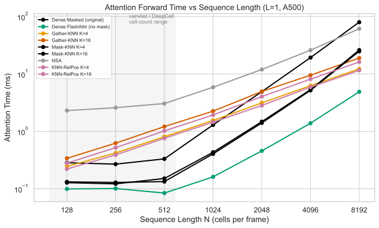
Dense FlashAttention (no mask) is fastest across all measured N on this hardware. Sparse gather attention crosses over at N ≈ 2000 — above the cell-count range of the analysis datasets (vanvliet / DeepCell, shaded region). At N=8192, the 6.5× speedup holds against the masked dense baseline. Against dense_flash, sparse is 2.5× slower even at N=8192.
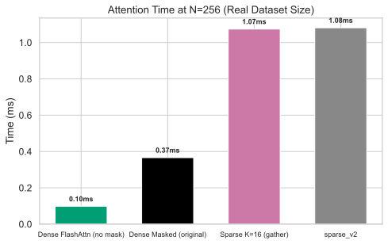
At N=256, sparse gather is 10.7× slower than dense FlashAttention (1.07ms vs 0.10ms). Two bottlenecks: (1) q_len=1 shape forces 2048 independent FlashAttention kernel launches, (2) irreducible gather copy of 8MB from scattered memory dominates at small N.
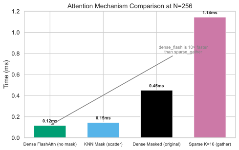
KNN mask via scatter (building an N×N mask with KNN structure and using EfficientAttention) is 7.9× faster than gather at N=256. Dense FlashAttention remains 1.3× faster than mask_knn.
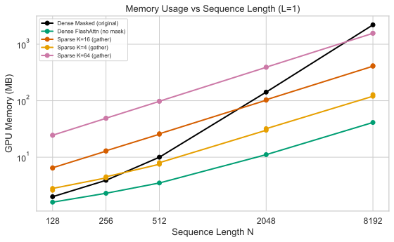
Sparse attention uses less memory at large N (120MB vs 2200MB at N=8192 for K=4). At N=256, the gap narrows: 4.3MB vs 3.9MB.
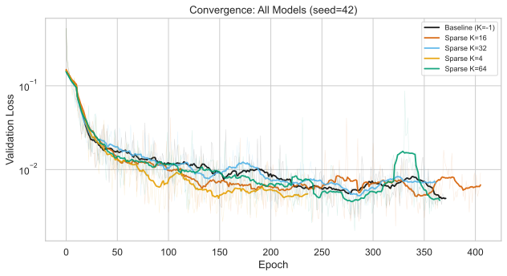
All 5 models produce overlapping validation loss curves. Bold lines: rolling mean (window=21). Faint lines: raw per-epoch values. Configs differ only in knn_neighbors (verified: 60 of 63 keys identical).
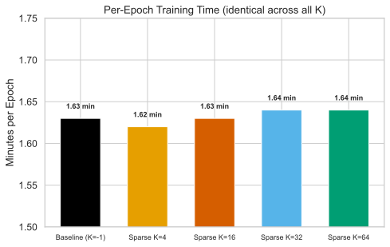
All models train at 1.62–1.64 min/epoch — no per-epoch difference between dense and sparse attention. At N ≈ 200, the attention mechanism is a small fraction of total training time.
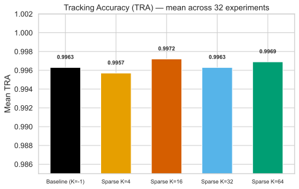
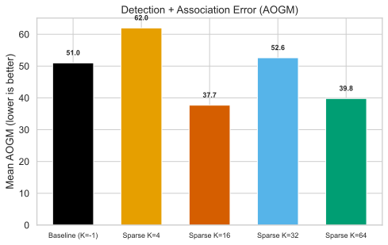
K=16: TRA 0.9972, AOGM 37.7 (baseline: 0.9963 / 51.0). All sparse variants within ±0.001 TRA of baseline. K=16 and K=64 show higher edge and division F1 than baseline.
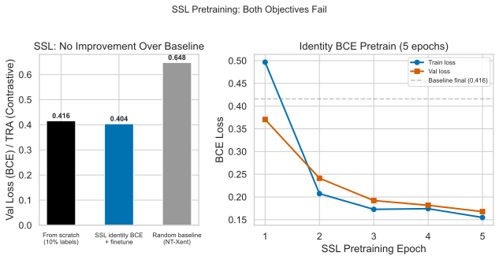
Both identity BCE and NT-Xent contrastive SSL fail. Identity BCE: val_loss 0.404 vs baseline 0.416 after 100-epoch finetune on 10% labels (no improvement). NT-Xent: collapse (cosine sim 0.89, TRA 65.1% vs random 64.8%). Root cause: 7-dim regionprops bottleneck.
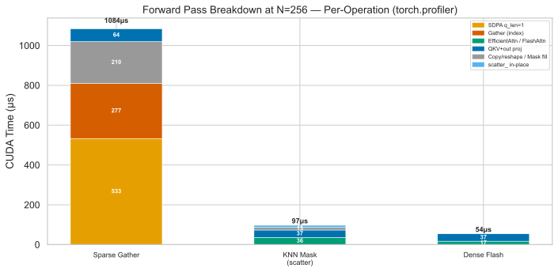
Measured on local GPU via torch.profiler. Gather: 1084μs (49% SDPA q_len=1, 26% index copy, 19% reshape).
Scatter: 97μs (37% EfficientAttn, 38% proj, 13% mask fill, 11% scatter_). Dense Flash: 54μs (31% FlashAttn, 69% proj).
Gather (347): k[B_idx, H_idx, idx, :] — 277μs for 8MB scattered copy
Scatter (541): mask.scatter_(3, src, 0.0) — 11μs in-place fill, O(NK)
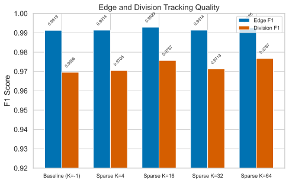
K=16: Edge F1 0.9929, Division F1 0.9757. Differences across K values are small (<0.006 F1).
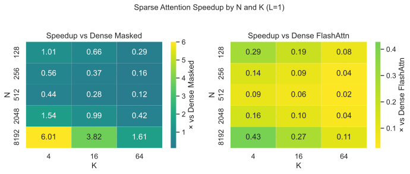
Left: vs the original masked dense baseline — shows 5.87× at N=8192, K=4. Right: vs dense FlashAttention — sparse is slower (speedup < 1) across all N and K. Only at N=8192 does sparse approach parity (0.43× for K=4).
Hypothesis: Replacing dense masked SDPA with KNN gather attention enables FlashAttention and yields speedup via O(NK) complexity.
At large N (8192): Sparse K=4 achieves 6.5× vs the masked dense baseline. However, against unmasked dense FlashAttention, sparse is 2.5× slower.
At the cell counts of the analysis datasets (vanvliet / DeepCell): Sparse gather is slower than dense FlashAttention. The gather overhead exceeds the compute savings.
Unexpected finding: The real bottleneck was per-layer cdist mask computation
(82% of attention time), not the N² attention itself. CachedDistAttention (compute
cdist once, share across L layers) provides ~2× attention speedup with identical semantics.
On accuracy: K=16 achieves TRA 0.9972 and AOGM 37.7 (vs baseline 0.9963 / 51.0). Sparse attention variants maintain or slightly improve tracking quality across all K values.